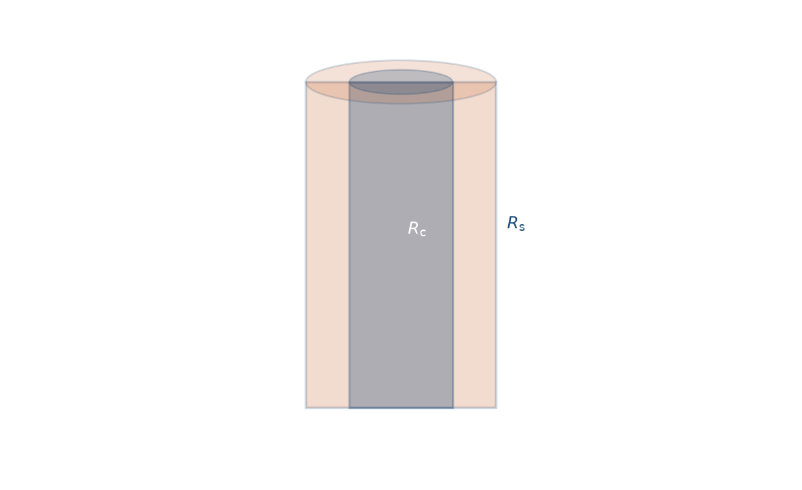
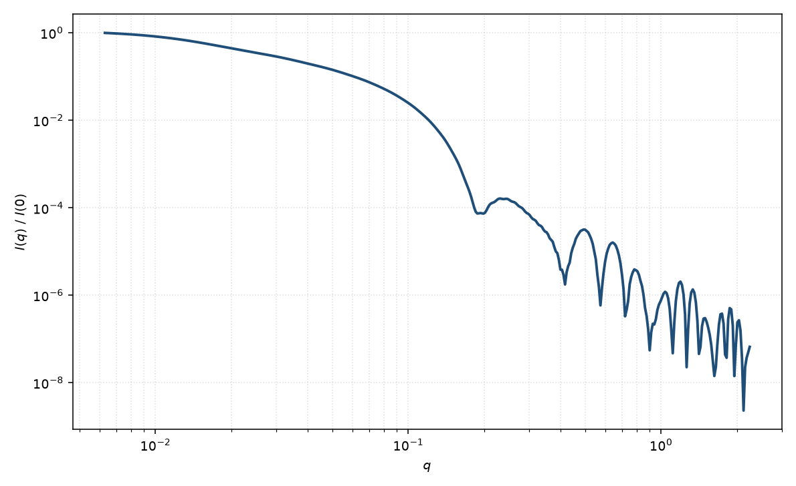

核壳圆柱
core-shell cylinder
适用场景
核壳圆柱描述径向两段均匀散射长度密度的有限圆柱：核半径 $R_c$、壳外半径 $R_s$，以及核、壳、溶剂三套 $\rho$。适用于管状胶束、核壳纳米棒、带溶剂化壳的刚性纤维，以及对比变分后仍需两段径向剖面的棒状体系。
与均匀圆柱相比，第一组截面振荡由有效衬度半径决定，壳干涉可在中等 $q$ 产生肩峰。壳很薄且壳衬度接近溶剂时退化为均匀圆柱；核衬度匹配溶剂时接近空心管。
壳厚、核半径与两段衬度高度相关。有中子 H/D 或 ASAXS 对比点时，简并可显著减弱。
物理图像
Livsey 把同心圆柱的振幅写成两层圆柱振幅之差：内层用核相对壳的衬度，外层用壳相对溶剂的衬度。取向 $\alpha$ 上仍是 $\mathrm{sinc}$ 与 $J_1$ 因子；粉末平均对 $|A(q,\alpha)|^2$ 积分。轴向长度对核与壳通常取同一 $L$（端面无额外帽时）。
径向信息出现在中–高 $q$：壳改变极小深度与相位。高 $q$ 由最锐的密度跳变控制；界面模糊应另加粗糙度，而不是继续加层。
示意图


核心公式
出发点
稀释、取向无规的粒子，相干散射振幅是衬度对平面波相位的体积分
$$F(\mathbf{q})=\int_V \Delta\rho(\mathbf{r})\,\mathrm{e}^{i\mathbf{q}\cdot\mathbf{r}}\,\mathrm{d}^3r.$$核壳圆柱把 $\Delta\rho(r_\perp)$ 分成两段常数：核 $r_\perp\le R_c$ 为 $\rho_c-\rho_{\mathrm{solv}}$，壳 $R_c\lt r_\perp\le R_s$ 为 $\rho_s-\rho_{\mathrm{solv}}$；轴向仍是同一长度 $L$。体积分因此写成两层均匀圆柱之差。
推导
单层均匀圆柱的振幅已在圆柱页导出：轴向 $\mathrm{sinc}(qL\cos\alpha/2)$ 乘径向 $2J_1(qR\sin\alpha)/(qR\sin\alpha)$，再乘体积 $V(R)=\pi R^2 L$。令
$$F(q,R,L,\alpha)=V(R)\,\frac{2J_1(qR\sin\alpha)}{qR\sin\alpha}\cdot\frac{\sin(qL\cos\alpha/2)}{qL\cos\alpha/2}.$$把壳层写成“半径 $R_s$ 的圆柱减去半径 $R_c$ 的圆柱”，核写成半径 $R_c$ 的圆柱，按衬度重排后
$$A(q,\alpha)=(\rho_c-\rho_s)F(q,R_c,L,\alpha)+(\rho_s-\rho_{\mathrm{solv}})F(q,R_s,L,\alpha).$$$q\to 0$ 时 $A(0)=(\rho_c-\rho_s)V(R_c)+(\rho_s-\rho_{\mathrm{solv}})V(R_s)$，即净衬度体积。粉末平均
$$P(q)=\frac{\displaystyle\int_0^{\pi/2}|A(q,\alpha)|^2\sin\alpha\,\mathrm{d}\alpha}{\displaystyle\int_0^{\pi/2}|A(0,\alpha)|^2\sin\alpha\,\mathrm{d}\alpha}.$$稀释强度 $I(q)=n\langle|A|^2\rangle+B$。$\rho_c=\rho_s$ 回到均匀圆柱；$\rho_c=\rho_{\mathrm{solv}}$ 回到空心管。
低 $q$ 与渐近
低 $q$ 仍是 Guinier：$P=1-q^2 R_g^2/3+O(q^4)$。$R_g$ 由两层圆柱对原点的二阶矩加权得到，粗略介于 $R_c$ 与 $R_s$ 的均匀柱之间，并含同一 $L^2/12$ 轴向项。指数形式在 $qR_g\lesssim 1$ 可用。
细长时中间区仍接近 $q^{-1}$。截面振荡的相位由有效衬度半径决定，不再固定在 $qR_s\approx 3.83$；核–壳干涉可把第一极小移深或填浅。大 $q$ 由最锐的径向密度跳变控制，尖锐界面包络 $\sim q^{-4}$。
参数表
| 参数 | 符号 | 含义 | 单位 | 典型范围 |
|---|---|---|---|---|
| 核半径 | $R_c$ | 均匀核的外半径 | Å 或 nm | 5–300 Å |
| 壳外半径 | $R_s$ | 壳层外表面半径，$R_s>R_c$ | Å 或 nm | 比核大约一个壳厚 |
| 长度 | $L$ | 核与壳的共同轴向长度 | Å 或 nm | 20–5000 Å |
| 核 / 壳 / 溶剂 SLD | $\rho_c,\rho_s,\rho_{\mathrm{solv}}$ | 三段散射长度密度 | Å$^{-2}$ | 由组成或对比实验 |
| 取向角 | $\theta,\phi$ | 轴相对光束（二维） | 度 | 由取向分布约束 |
| 标度 / 本底 | $n$, $B$ | 数密度与常数本底 | 与强度单位一致 | 实验相关 |
拟合注意
衬度比与壳厚是主简并。优先固定由化学计量得到的 $\rho$，只放几何；或固定壳厚、拟合衬度。半径多分散抹平截面振荡；长度多分散主要改中间斜率，不要用一个宽度同时代表两者。
取向：粉末平均无法分开径向壳与轴向帽。二维数据用 $\theta,\phi$ 与取向宽度；把壳厚当成“等效半径”会偏大。
磁性：磁核加非磁壳（或磁死层）时，核磁 SLD 与壳磁 SLD 须单独给出，几何半径也不必与核通道相同。
相近模型
参考文献
- Livsey, I. Neutron scattering from concentric cylinders. Intraparticle interference function and radius of gyration. J. Chem. Soc., Faraday Trans. 2 1987, 83, 1445–1452. DOI: 10.1039/F29878301445
- Pedersen, J. S. Analysis of small-angle scattering data from colloids and polymer solutions: modeling and least-squares fitting. J. Appl. Cryst. 1997, 30, 339–354. DOI: 10.1107/S0021889897002532